The Executive Board
Also known as the eboard, these magnificent individuals are the elected officers that maintain ASU's operation. They meet regularly to create and plan events for the general body and all Northeastern students alike.
President - Megan Lau
Computer Science and Finance, 2020
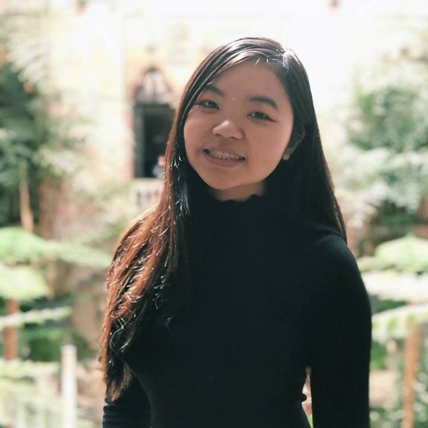Whale hello there! I’m a junior majoring in computer science and finance from New Jersey. I really like memes/puns, food adventures, and anything cute. ASU is such a fun and welcoming place for people to hang out and to learn. I’ve made many close friends in ASU and am so proud to call this club my family. My goal is to make ASU close-knit and supportive. I love making friends so if you see me around campus just say hi! It’s been an amazing three years in this club and I can’t wait to make it even better!
Vice President - Ryan Cheung
International Affairs and Political Science, 2020
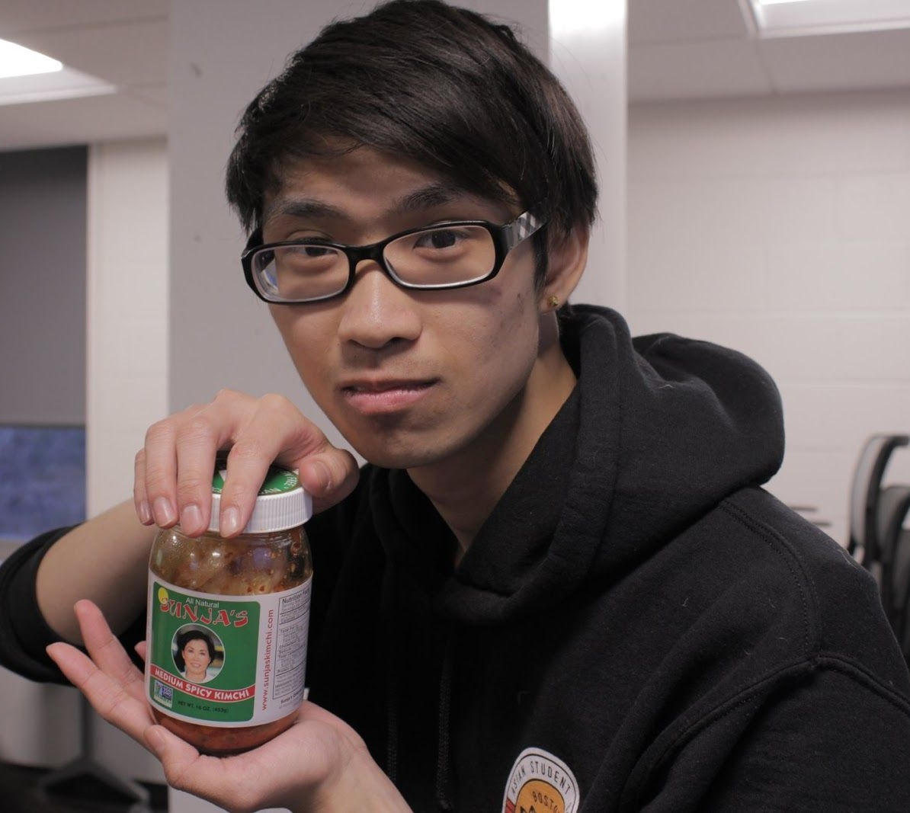Wassup! I'm now a fourth year (I’m old) combined international affairs and political science major from Boston. I love cats, dogs, memes, food, and other baked goods. I joined ASU in my freshman year to make new friends and meet new people, but I got really involved in my second year through the ASU Minis Program (selfless plug). I’ve also met most of my close friends in college through ASU. Come and join us. Four years in and it’s still lit. I can't wait to meet all y’all!
Secretary - Paul Rhee
Computer Science and Music, 2021
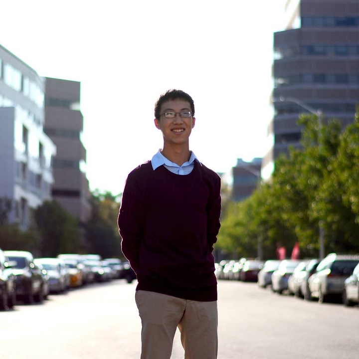Hey everyone! I’m a second year CS and music technology/composition major from Belmont, MA. I love everything to do with music, from composing to listening and playing, and video games (please don’t ask me to carry I can’t carry). Ever since I joined ASU, I’ve experienced lots of fun times and have been able to meet amazing people, each with a story of their own. Whether you want to chill, have fun, or just talk, I’m open for everything! Hope I get to know y’all better!
Co-Treasurer - Tou Kan
Finance and Accounting, 2021
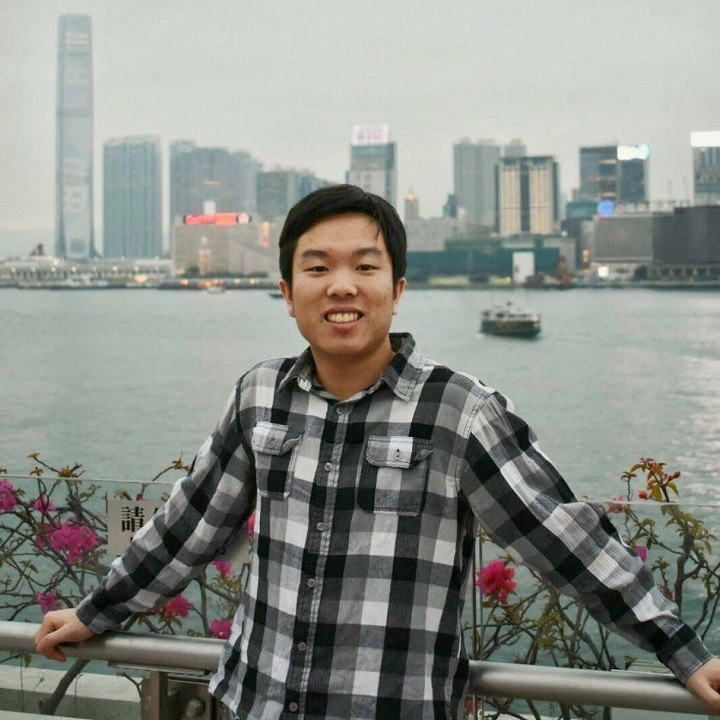Hello! I’m a second year finance and accounting major from New Jersey. Some of my passions include fishing, kayaking, and tennis, and as anyone who knows me well will know, I also love to talk about personal finance and cars. I’m glad I made the decision to join ASU last year since I’ve made so many new friends here and some truly amazing memories in just one short year. I always look forward to meeting new people, so please don’t be shy and chat with me about anything! I’m super excited for the upcoming year and I hope you are too!
Co-Treasurer - Anthony Tran
Mechanical Engineering, 2021
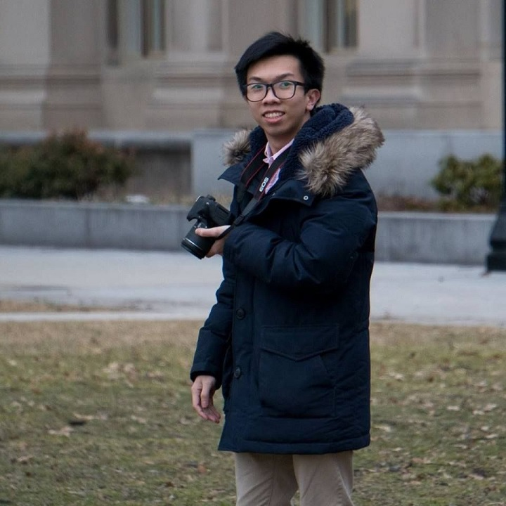Howdy, y’all! I’m a third year MechE from New Orleans, Louisiana. I like playing video games, sleeping, and dying. For me, ASU has been such a welcoming community, and I hope to be able to help keep it going smoothly for years to come. I’m pretty chill, so if you ever have any questions, don’t hesitate to ask. I hope y’all will come to enjoy and appreciate ASU as much as I do.
Co-Program Coordinator - Brianna Ku
Physical Therapy, 2023
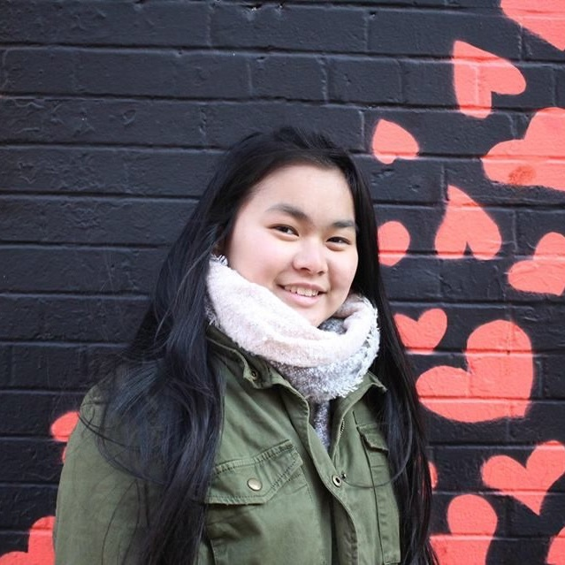Hello! I’m a second year physical therapy major and psychology minor from Brooklyn, NY. When I have spare time, I love playing piano, guitar and ukulele, singing, going to concerts and taking pictures; if you’re ever down for a jam session, let me know! Since joining ASU after coming back from N.U.in Greece, I have met many amazing people that are now some of my closest friends. I hope that I can get to know you all!
Co-Program Coordinator - Jingyu (Goldfish) Song
Bioengineering, 2021
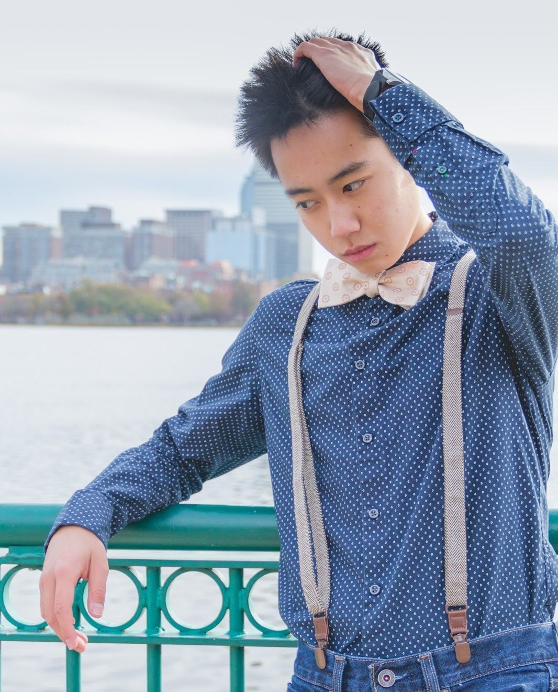Hey! I am a second year bioengineering major from Hopewell Junction, NY. I love exploring, eating food, and just hanging out and having fun. I’m super friendly and always looking to meet new people, so if you see me on the street don’t be afraid to say hi! Over the past year, ASU has given me good times, great friends, and an amazing community. We welcome everyone, plus we lit af, so come and join! I’d love to meet you!
Public Relations - Katelyn Li
Bioengineering, 2021
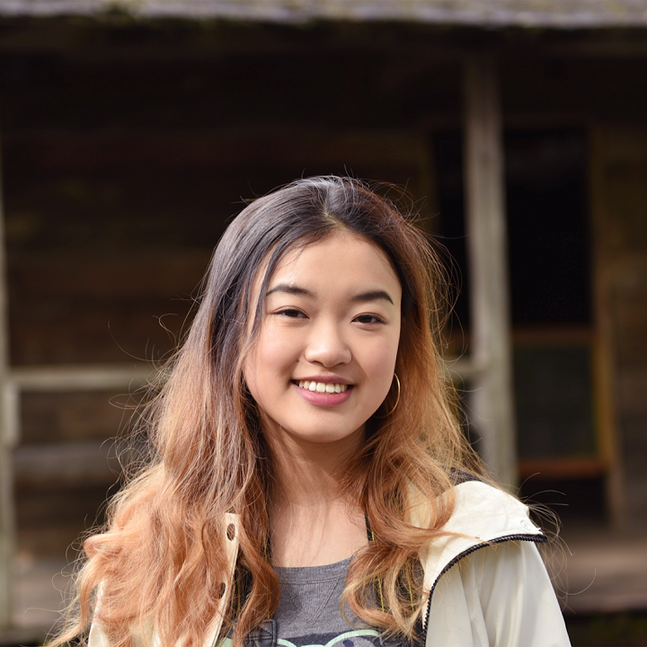Hey there! I’m a second year bioengineering major (and aspiring criminal justice minor, hoping I like the classes) from Newton, MA. I enjoy traveling, hiking, finding new music, and exploring the city. I also have a constantly expanding map of food places I want to eat at and I’m determined to visit all of them. ASU has been such a welcoming community for me this past year and I’m excited to pay it forward to new and returning faces alike!
Media Specialist - Charlene Ng
Computer Engineering, 2021
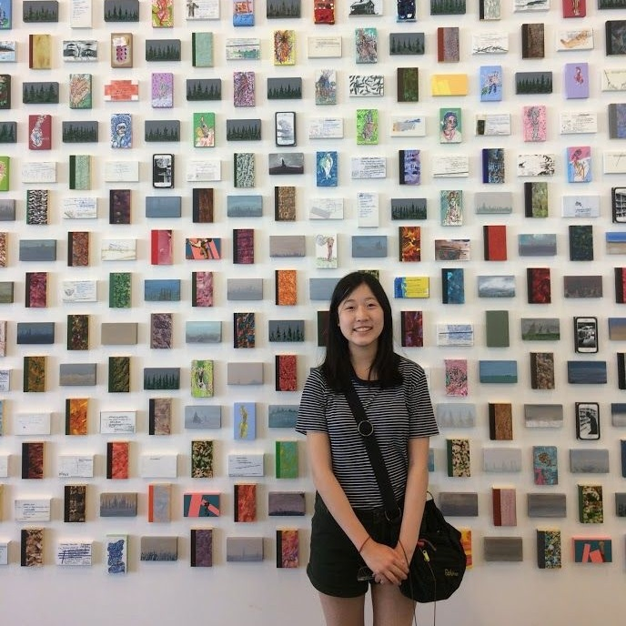Hello :) nice to meet you, I am a second year computer engineering major from Newton, Massachusetts. I enjoy painting, sketching, playing badminton, reading comics, and eating other people’s food :D I’ve made a lot of good memories in ASU last year and am hoping to have another great year. Looking forward to meeting all of you!!
PAAC Representative - Chris Park
Chemistry, 2021
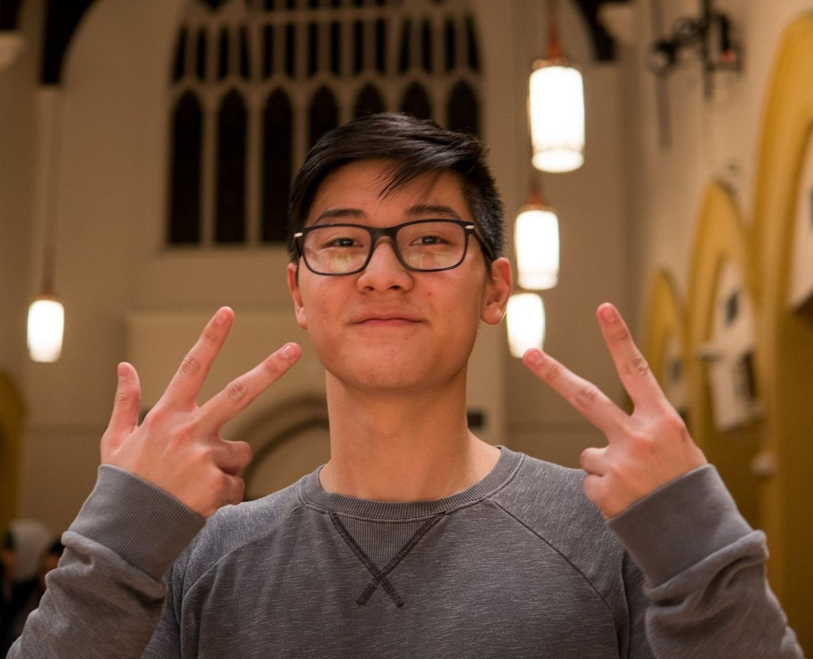Hey all! I am a second year chemistry major from Bergen County, New Jersey! I love meeting and connecting with people (especially over food!) so don’t be a stranger! I firmly believe that everyone has a story to share, and ASU was a great way for me to connect with people and their stories. ASU created a group of people that I could call my community and new home in Boston; I hope that we will be able to provide a new place for all newcomers to feel as welcome as I did, so please come join us!
Performance Coordinator - Jenny Yan
Behavioral Neuroscience, 2022
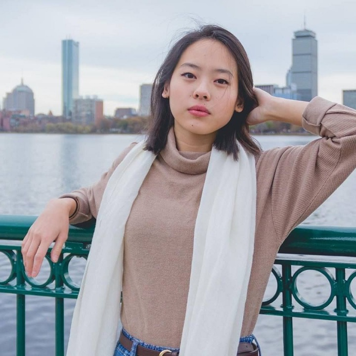Hi there! I am a second year behavioral neuroscience major from central New Jersey. I love dancing, art and photography, listening to music (music recommendations always welcome!), eating, and exploring new places. ASU was one of the first student organizations I joined when I started college, and I'm so happy I did. ASU has given me the opportunity to meet so many wonderful people and has made college feel more like home. So please come join us! I'd love to get to know you!
Freshman Representative - Katherine Au
Bioengineering, 2022
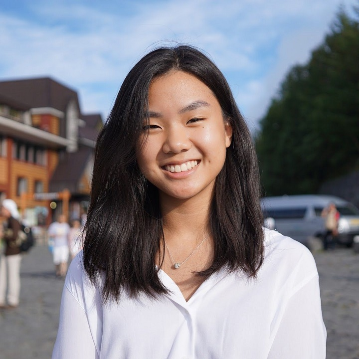Heyo! I am a first year bioengineering major from Tulsa, Oklahoma (aka the state above Texas). Puns are my forte so if you’re looking for a puntastic time, I’ll be at Snell punning away :D. I’m passionate about all things food; it makes miso happy! I cannoli hope that I’ll be able to give back to ASU what it has given me: a home away from home, an opportunity to connect with others no matter where they’re from, and a welcoming community part of something larger than itself. I hope you’ll join us for an eggciting time!
Freshman Representative - Andrew Nguy
Computer Engineering/Computer Science, 2023
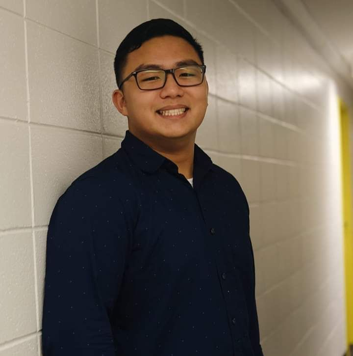Hey guys! My name is Andrew and I’m from Medford, just outside of Boston. Some of my hobbies are playing video games, board games, and playing sports. ASU is like a second family to me, and I am so grateful for the wonderful experiences and opportunities that it has given me. I hope that ASU can reach as many people as possible so that they too can be part of the amazing community. If you ever have any questions, let me know, or any other e-board members, we’re all very friendly and eager to help! Hope to see you at the next ASU event!
Past Eboards
Every year, the leaders of the present pass the torch on to the aspiring individuals of tomorrow. We are forever grateful for the contributions and hard work of past eboards who have made ASU a better organization!
- 2017 - 2018
- President: Vivian Cheng
- Vice President: Megan Lau
- Secretary: Kelly Yokoi
- Treasurer: Anisa Anuar
- Public Relations: JoJo Lee
- Co-Program Coordinators: Thomas Cotugno and Ryan Cheung
- Dance Coordinator: Kiley Hebert
- PAAC Representative: Linda Zhang
- Freshmen Representatives: Jenny Yan and Jingyu Song
- 2016 - 2017
- President: Emily Tang
- Vice President: Sharon Zhu
- Secretary: Dawn Wong
- Treasurer: Steven Zhou
- Public Relations: Ethan Tang
- Co-Program Coordinators: Vivian Cheng and Brian Yeung
- Dance Coordinator: Luqi Qin
- PAAC Representative: Emily Chuang
- Freshmen Representatives: Megan Lau, Anisa Anuar
- 2015 - 2016
- President: Xida Zou
- Vice President: Christina La
- Secretary: Christina Chun
- Treasurer: Sharon Zhu
- Public Relations: Ethan Tang
- Co-Program Coordinators: Dawn Wong and Emily Tang
- PAAC Representative: Emily Miller-Mcglone
- Freshmen Representatives: Brian Yeung, Edward Wang
- 2014 - 2015
- President: Jackie Tang
- Vice President: Xida Zou
- Secretary: Christina La
- Treasurer: Chris Wan
- Public Relations: Kevin Yang
- Co-Program Coordinators: Joanne Li and Miranda Chiu
- PAAC Representative: Menaka Sangvhi
- Freshmen Representatives: Emily Tang, Michael Shen
- 2013 - 2014
- President: Stephanie Tang
- Vice President: Mabel Setow
- Secretary: Christina La
- Treasurer: Sindy Mei
- Public Relations: Kevin Huang
- Co-Program Coordinators: Jackie Tang and Xida Zou
- PAAC Representative: Deanna Wong
- Freshman Representatives: Miranda Chiu, Lauran Liang
- 2012 - 2013
- President: David Phan
- Vice President: Stephanie Tang
- Secretary: Olivia Yang
- Treasurer: Sindy Mei
- Co-Program Coordinators: Derrick Dow and Mabel Setow
- PAAC Representative: Chris Ho
- Upperclassman Rep: Deanna Wong
- Webmaster: Daniel Jin
- Freshman Reps: Alex Tang, Michael Chan, Michael Hoang
- 2011 - 2012
- President: Angel Lam
- Vice President: Cung Tran
- Treasurer: Stephanie Tang
- Secretary: Karen Chen
- Co-Program Coordinators: David Phan and Derek Hsu
- PAAC Representative: David Yung
- Webmaster: Alex Seeto
- 2010 - 2011
- President: Linda Wang
- Vice President: Edwin Leung
- Secretary: Angel Lam
- Treasurer: Christina Zheng
- Co-Program Coordinators: Karen Chen and Cung Tran
- PAAC Representative: Connie Lu
- Webmaster: David Phan
- 2009 - 2010
- President: Andy Huang
- Vice President: Linda Wang
- Secretary: Angel Lam
- Treasurer: Kalee Kite
- Co-Program Coordinators: Janet Lui and Kent Xie
- PAAC Representative: Danny Chen
- Webmaster: Thien Nguyen
- 2008-2009
- President: Jen Cheng
- Vice President: Andy Huang
- Secretary: Ranya Gebara
- Treasurer: Kalee Kite
- Program Coordinators: Tony Tang
- PAAC Representative: Linda Wang
- Webmasters: Danny Tse and Richie Huynh
- 2007 - 2008
- President: Thade Wolfe
- Vice President: Jen Cheng
- Secretary: Linda Wang
- Treasurer: Kalee Kite
- Co-Program Coordinators: Andy Huang and Tony Tang
- PAAC Representatives: Long Wu and Edwin Leung
- Webmaster: David Tith